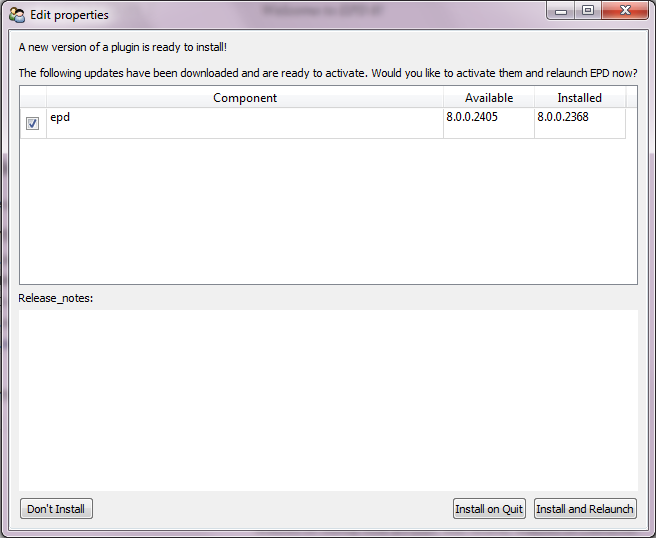

The EPD GUI can update itself in place, so you do not need to download and run a separate installer. Updates are automatically downloaded in the background and then made available for you to install when desired.
The availability of updates is indicated in the top menu item of the EPD GUI Help menu. Ordinarily the menu item reads “EPD 8 is Up-To-Date. Check now.” Selecting this menu item causes the GUI to check for updates immediately, rather than waiting for the next automatic hourly check.
When an update is available, this menu item will show “Downloading...” while the update is being downloaded and prepared for installation. Once the update is ready to be installed, the menu item changes to “Install Updates...”. Selecting the menu item in this state displays the update dialog shown below:
This example indicates that build 2405 of the EPD 8 GUI is available; if you click that row, the ‘Release notes’ section will show a summary of the changes in this update.
The ‘Install and Relaunch’ button will immediately apply the update, close the EPD GUI, and relaunch it. Please save any file changes in the editor before you select this option (also, the GUI will prompt you to do so).
The “Install on Quit” button lets you specify that you want the update to be installed when you quit the EPD GUI, so that it will only take effect the next time you start.
If you select “Don’t Install”, then the EPD GUI will not be updated now or after a restart. You can return to this dialog to do the update at any later time.
Note: The update mechanism described here only updates the EPD 8 GUI itself. It does not modify your EPD 7.x User Python Environment. This ensures that GUI updates will not impact any code you are running. To update your User Python Environment, please see Package Manager